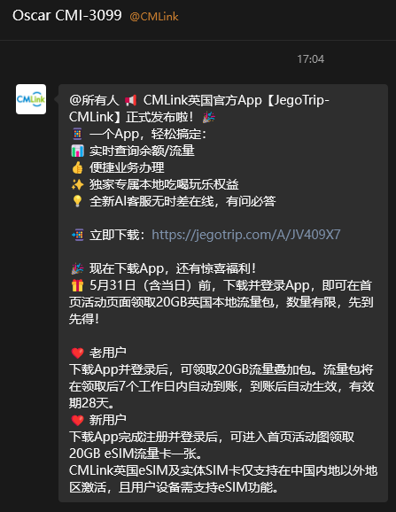

中国移动CMLink UK（小移在英国）发布官方App【JegoTrip-CMLink】
由JegoTrip无忧行团队负责开发，仅提供用量、话费查询，不过也可以领免费eSIM
1）5月31日之前，下载并登录App可获得20GB英国本地流量，7个工作日内到账有效期28天
2）新用户可领取eSIM一张，此卡可在中国香港、英国及欧盟进行激活，或使用英国IP代理下拉起WiFi通话（VoWiFi）激活号卡
激活后可办理中英月套餐，每月16.8英镑（约人民币168元）享受150GB两地流量。虽然CMLink的120天公平使用原则永远不会生效，但仍需注意在套餐取消、过期后30天应办理有效套餐，最便宜的12英镑保号套餐可维持一年，否则号卡将在一个月后失效无法找回
由JegoTrip无忧行团队负责开发，仅提供用量、话费查询，不过也可以领免费eSIM
1）5月31日之前，下载并登录App可获得20GB英国本地流量，7个工作日内到账有效期28天
2）新用户可领取eSIM一张，此卡可在中国香港、英国及欧盟进行激活，或使用英国IP代理下拉起WiFi通话（VoWiFi）激活号卡
激活后可办理中英月套餐，每月16.8英镑（约人民币168元）享受150GB两地流量。虽然CMLink的120天公平使用原则永远不会生效，但仍需注意在套餐取消、过期后30天应办理有效套餐，最便宜的12英镑保号套餐可维持一年，否则号卡将在一个月后失效无法找回
